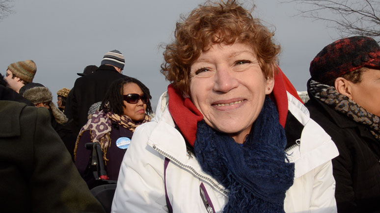

President Obama’s Second Inauguration
I was among 15 college journalists nationwide selected to cover President Obama’s second inauguration with PBS NewsHour’s InaugBlog.
I worked as a videographer on the team and published a TV style video exploring how young undocumented immigrants were reacting to Obama winning a second term in office.
A Dream Deferred: A Look Forward As Immigration Debate Heats Up
President Obama began his second term in office with a call for comprehensive immigration reform. While lawmakers debate the future of immigration policy, a generation of unauthorized children grows up in America virtually untracked by the government. Jose Garcia, 17, explains his situation in America.
Education is a top priority for inaugurationg-goers
Debbie Suer came to Washington, D.C., from California to attend the 57th Inauguration. At the age of 58, she decided to go back to college.
I also wrote an article showing how education remains a top priority for some inauguration visitors. PBS NewsHour’s “The Rundown” blog also decided to run this story.
The Missouri School of journalism also wrote various articles publicizing Charles Minshew and I for our work on the project.